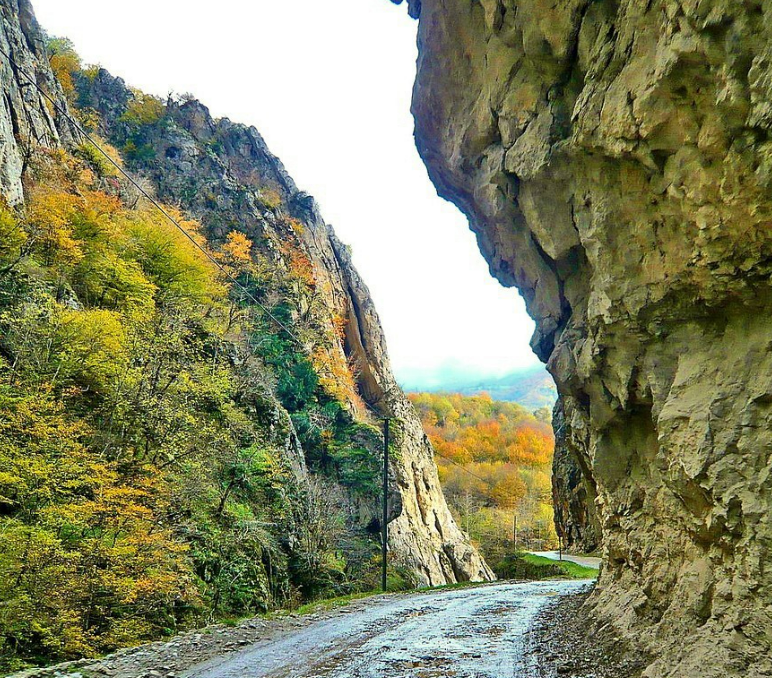
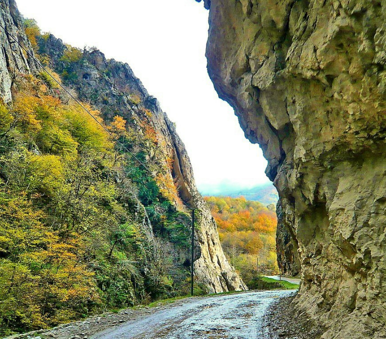

Имея более чем 10-летний опыт работы, я провожу индивидуальные туры, демонстрирующие лучшее из Азербайджана. Если вас интересует история культуры, современная архитектура или красота природы, я сделаю ваш визит незабываемым.
Наша команда всегда к вашим услугам

Вас ждет теплый прием в аэропорту Азербайджана. Начните свое путешествие с комфортом из аэропорта в отель на современных, просторных автомобилях, адаптированных к вашим потребностям. Наши просторные автобусы, идеально подходящие для больших групп, гарантируют, что каждый сможет насладиться комфортной поездкой.

От захватывающих дух пейзажей до исторических мест — все подготовлено для необыкновенных приключений.
Откройте для себя Азербайджан, как никогда раньше, с помощью индивидуального тура, созданного специально для вас! Я разработаю маршрут, который идеально будет соответствовать вашим интересам и предпочтениям, гарантируя уникальное и незабываемое путешествие по самому сердцу этой потрясающей страны. Независимо от того, привлекает ли вас историческое очарование Старого города, современные чудеса, такие как Пламенные башни, или безмятежная красота побережья Каспийского моря, я позабочусь о том, чтобы ваше путешествие было максимально персонализированным и запоминающимся.
День 1
Регистрация
Начните свое путешествие по Азербайджану с безупречного комфорта и незабываемых видов!

Я обеспечу бесперебойный трансфер из аэропорта и помогу с регистрацией в отеле, чтобы вы могли расслабиться. Вечером, приготовьтесь быть очарованными очарованием Баку, когда мы начнем наш тур по Бакинскому бульвару вдоль Каспийского моря. Поднимемся в Горный парк, откуда открывается невероятный панорамный вид на город, освещенный знаменитыми Пламенными башнями — потрясающим символом современного Баку. Этот вечер обещает волшебство знакомства с ярким сочетанием истории и инноваций города.
День 2
Знакомства с Баку
Насладитесь удивительным днем, исследуя Маленькую Венецию в Баку. Здесь вы найдете живописные каналы, напоминающие знаменитую Венецию, с колоритом Азербайджана.
Исследуйте уникальные ковры Азербайджана в знаменитом музее. Музей представляет разнообразие национальных узоров и стилей, отражающих культуру страны.
Вернитесь во времени, изучая историческое очарование Ичеришехер, сердца древнего Баку. Бродить по узким каменным улочкам, полюбуйтесь многовековой архитектурой и погрузитесь в уникальное сочетание азербайджанской культуры и истории. Основные моменты тура включают Девичью башню, Дворец Ширваншахов и знаменитые мечети и минареты, определяющие прошлое Баку. Это путешествие обещает незабываемое представление о истории и тайны, хранящиеся в этих древних стенах.
Экскурсия по Караван-сараю

Шагните в историю с посещением древнего караван-сарая, символа богатого прошлого Азербайджана на Шелковом пути. Здесь когда-то собирались путешественники и торговцы, делясь историями и впечатлениями под замысловатыми арками. которые прекрасно сохранились. Прогуливаясь по его историческим залам и тихим внутренним дворам, мы ощущаем очарование этого архитектурного шедевра, который веками оставался культурной достопримечательностью Баку. Караван-сарай предлагает редкий взгляд в прошлое и более глубокое понимание азербайджанской культуры. роль в соединении Востока и Запада.
Экскурсия Девичья башня

Исследуйте загадочную и культовую Девичью башню, символ Баку, имеющий многовековую историю. Это древнее сооружение, овеянное легендами и архитектурным чудом, приглашает вас окунуться в наследие. Азербайджана. От уникальной цилиндрической формы до панорамных видов на Каспийское море. каждый камень рассказывает историю стойкости и культурной гордости. Поднимаясь по ступеням башни, узнайте о загадочных историях, которые ее окружают. от фольклора о девичьем прыжке, чтобы избежать нежеланного замужества, до теорий о его функции как древняя обсерватория. Девичья башня является неотъемлемой частью Старого города Баку, представляя собой пересечение мифов, истории и потрясающего архитектурного дизайна.
День 3
Знакомства с Баку
Гобустан — археологический заповедник под открытым небом, расположенный к югу от Баку, известный своими замечательными петроглифами и наскальными рисунками. Этот объект Всемирного наследия ЮНЕСКО содержит более 6000 рисунков, относящихся к Мезолитический период и продолжающийся в средние века. Эти замысловатые резные изображения демонстрируют сцены древняя охота, ритуальные танцы и дикая природа, дающие представление о жизни первых жителей. В Гобустане также есть удивительные геологические образования и грязевые вулканы, что делает Это уникальное место, где чудеса природы сочетаются с древней историей. Посетители могут исследовать петроглифы выгравированы на больших каменных поверхностях и узнайте об их культурном значении. Резерв представляет собой свидетельство творчества и устойчивости доисторических сообществ, отмечающее место Азербайджана в древний мир..
Грязевые вулканы Азербайджана — впечатляющее природное явление, в котором обитает почти половина мировых грязевых вулканов. Эти замечательные места известны своей бурлящей холодной грязью, которая время от времени извергается. создание потустороннего ландшафта. Часто рассматриваемые как миниатюрные вулканы, они выделяют природные газы и полезные ископаемые из земной коры, что придает этому району уникальное геологическое значение. Экскурсия по этим грязевым вулканам дает посетителям возможность из первых рук узнать Необычайную вулканическую местность Азербайджана. От сюрреалистических холмов до нежных извержений, каждое посещение грязевого вулкана позволяет поближе познакомиться с динамическими процессами на Земле и является обязательным к посещению энтузиастов и искатели приключений.
День 4
Изучение Баку
Экскурсия по водопаду Афурджа
 

Водопад Афурджа, расположенный в Губинском районе Азербайджана, является захватывающей природной достопримечательностью. Известный своим мощным каскадом водопад ниспадает с высоты 30 метров, посылая освежающие брызги в воздух. Когда ветер сильный, посетители могут почувствовать прохладный туман, добавляющий захватывающую атмосферу. Безмятежные, прозрачные воды и свежий горный воздух восстанавливают силы даже самых утомленных. путешественники. Это потрясающее место идеально подходит как фотографам, так и любителям природы. уникальная связь с природной и красотой Азербайджана.
Наша последняя остановка дня — очаровательное озеро Ченлибел, излюбленное место любителей природы. Это спокойное озеро, окруженное живописной зоной отдыха, приглашает посетителей расслабиться и насладиться свежей водой. полюбуйтесь мирными пейзажами. Неподалеку уютное кафе предлагает идеальное место для отдыха и обеда. любуясь безмятежным видом на озеро. Отдохнув у воды, мы вернемся в отель, чтобы завершить наше путешествие. Озеро — прекрасное завершение дня, предлагающее отдых и возможность пообщаться. с природной красотой и Азербайджана.
День 5
Изучение Баку
Священные огни Апшерона — увлекательное природное явление, когда природный газ просачивается сквозь пористые камни и воспламеняется, создавая вечный огонь. Это место известно как «Янар Даг» или «Горящая гора». на протяжении веков было почитаемым местом, откуда открывался завораживающий вид, особенно в сумерках. Это символ богатых природных ресурсов и культурное наследие Азербайджана. Посетители могут стать свидетелями этого редкого явления и узнать о древних верованиях. связаные с огнепоклонством в этом регионе.
Крепость Раман, средневековая крепость в Баку, является свидетельством древней истории Азербайджана. архитектурное мастерство. Эта крепость с ее прочными каменными стенами и потрясающими видами когда-то играла решающую роль в защите Апшеронского полуострова. Прогуливаясь по крепости, посетители почти ощущают отголоски прошлого и познакомьтесь с богатой историей этого стратегического укрепления. Он предлагает захватывающий взгляд на военную историю региона и является Обязательным посещением любителям истории.
Центр Гейдара Алиева — архитектурное чудо, спроектированное известным архитектором Захой Хадид. Этот центр с плавными изгибами и футуристическим дизайном является культурным центром, где проводятся выставки, мероприятия и искусство. Его культовая волнообразная структура символизирует изменчивость и прогрессивный дух современного искусства, что делает его эмблемой современного ландшафта Баку. Внутри посетители могут осмотреть разнообразные выставки: от исторических артефактов до современного искусства, что делает его обязательным местом посещения в Баку.
День 6
Изучение Баку
Тур Баджи-Габала предлагает завораживающее путешествие по потрясающим пейзажам Габалинского района. Этот район, известный своими пышными зелеными горами и безмятежной атмосферой, идеально подходит для любителей природы и искатели приключений. Исследуйте живописные пешеходные тропы, насладитесь захватывающими дух видами и погрузитесь в спокойную обстановку. Прогуливаясь по живописным видам, вы можете даже заметить разнообразную дикую природу и яркую флору, что делает это незабываемым опытом.
Экскурсия к водопаду «Семь красавиц»

Водопад «Семь красавиц» — чудо природы, очаровывающее посетителей семью потрясающими каскадами. каждый из которых предлагает уникальный взгляд на красоту природы. Звук текущей воды и свежий горный воздух создают спокойную атмосферу, идеальную для отдыха и размышлений. Эта скрытая жемчужина — не только отличное место для фотографий, но и безмятежное место для отдыха. для тех, кто хочет соединиться с природой.
Озеро Хоругель – это безмятежное место, идеально подходящее для отдыха и развлечений. В окружении величественных гор Это озеро с пышной зеленью предлагает возможности для катания на лодках, рыбалки и пикников. Если вы хотите расслабиться или поискать приключений, озеро Хоругель — идеальное место, чтобы насладиться красотой природы. Не упустите шанс насладиться здесь закатом, поскольку цвета прекрасно отражаются на поверхность воды.
День 7
Изучение Баку Последний день
Яшил-Базар — оживленный рынок, полный свежих продуктов, специй и изделий местных ремесленников. Прогулявшись по красочным прилавкам, вы окунетесь в оживленную атмосферу насыщенную ароматом традиционной азербайджанской кухней. Это идеальное место, чтобы погрузиться в местную культуру. уникальные сувениры или подарки для Ваших близких. От экзотических специй до украшений ручной работы — Яшил-Базар предлагает настоящую сокровищницу. предметы, отражающие очарование и наследие Азербайджана.
Это последняя часть нашего путешествия перед отъездом из Баку. Здесь вы можете купить подарки своим друзьям и семья
Я всегда буду рад видеть вас снова!